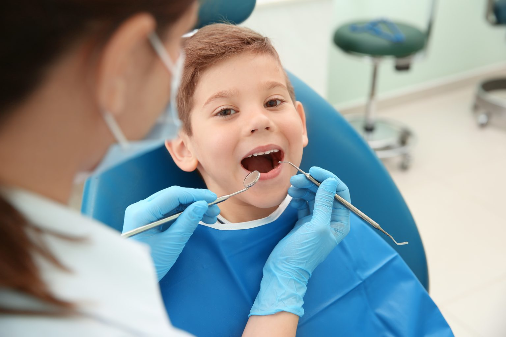
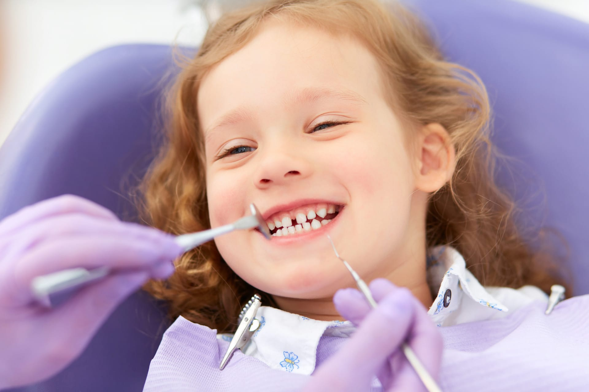
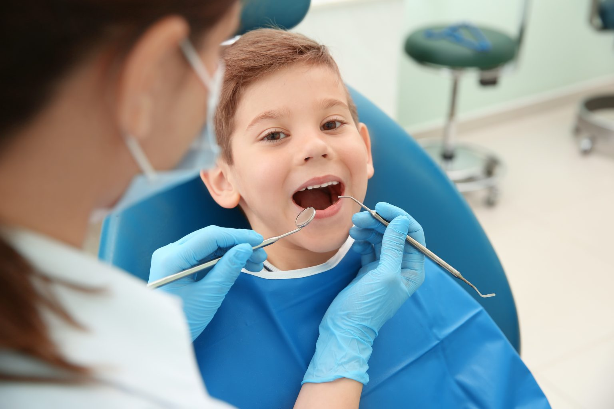
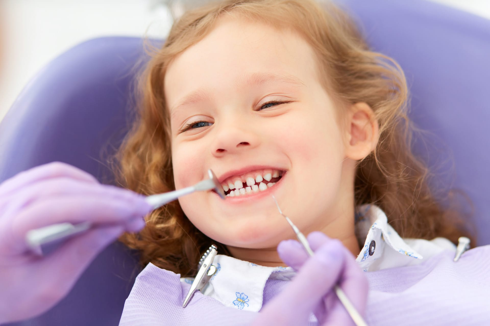

Pediatric Dentistry
 



We treat kids too! We provide primary and comprehensive dental care for children and adolescents. We consider all patients below 18 years old as pediatric patients. Children require special dental care. Their needs are very different from adults. Primarily, this is because children are young. They cannot control their fear, phobia, anxiety or anger. Very young children are also not able to obey commands such as opening their mouth, lifting their tongue or staying still during their dental treatment. This makes the job of the dentist very difficult and time consuming. Patiently, dentists need to manage the behaviour of children by talking and playing with them, making them calm and earning their trust before being able to treat them. All dentists are trained and capable of treating a child. However, in some cases, the dentist may feel the need to refer the child to a Pediatric Dentist specially when it is necessary to perform complex procedures under sedation and general anaesthesia.
Our clinic provides almost all the services necessary to help you take care of your children’s teeth:
Check-ups
Cleanings
Dental Fillings
Dental Crowns
Tooth Extraction
Take your children to the dentist as soon as they reach their first birthday or approximately six months after their first tooth emerges. Thereafter, it is important to take your children to the dentist at least twice a year for regular check-ups to monitor new developments in the child’s mouth, evaluate changes in the condition of teeth and gums, and to receive advise on how to take care and maintain your child’s oral health.
Children are very prone to cavities especially if they are not able to brush their teeth regularly and properly. Cavities are caused by dental plaque, a type of bacteria on the teeth that produces acid that causes tooth decay. Regular dental cleanings will help prevent cavities from developing by removing plaque and tartar from your children’s teeth.
When tooth decay develops, a portion of your child’s tooth needs to be removed and restored with dental fillings before it causes your child a toothache and before it spreads. Tooth colored fillings are safe and can restore your child’s tooth back to its shape, size and color.
When the damage caused by tooth decay is already extensive, dental fillings may no longer be enough to save it. A dental crown might be necessary to save your child’s tooth.
When damage caused by tooth decay is extensively throughout, a dental filling or a crown may no longer be able to save it. A dental extraction may already be necessary. Other reasons for tooth extraction of primary teeth include extensive trauma, severe infection and when a primary tooth is preventing a permanent tooth from erupting.